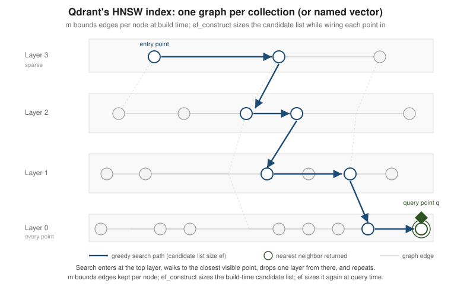

Vector Indexing & HNSW
|
This content was generated with the assistance of AI and should be verified against the official documentation before being relied on in production. |
Every Qdrant collection — or, with multiple named vectors, every vector within it — keeps its own HNSW graph: a layered proximity structure that turns nearest-neighbor search from a full scan into a greedy walk from a sparse top layer down to a bottom layer holding every point. This page covers the parameters that shape that graph, the knob that trades recall for latency at query time without touching the index, the escape hatch to exact brute-force search, and the quantization schemes Qdrant offers to shrink memory and speed up scoring.
The HNSW index
Qdrant builds one HNSW graph per collection by default, or one per named vector when a collection defines
several (each named vector can even set its own hnsw_config, so a small metadata vector and a large
embedding vector in the same collection are not forced to share graph parameters). Below a configurable
vector data size (full_scan_threshold, in kilobytes of raw vector data) Qdrant skips the graph and scans
directly, since building and walking an index costs more than it saves on a handful of vectors.

The full set of index parameters — including the payload indexes covered on the next page — is described in Indexing.
When the index actually exists
A collection is not one big graph. Qdrant stores points in segments, and a background optimizer decides which
segments get an HNSW index. New points land in a small, appendable segment that is searched by scanning; once a
segment holds more raw vector data than indexing_threshold (in kilobytes, 10000 by default), the optimizer
builds an HNSW graph for it in the background and swaps in the indexed copy.
no graph, searched by scan"] A -->|"segment data exceeds indexing_threshold"| O["Optimizer builds HNSW
collection status: yellow"] O --> I["Indexed segment
graph plus raw or quantized vectors"] I --> G["Collection status: green"] Q["Search request"] --> A Q --> I A --> M["Merge hits from all segments"] I --> M
Two consequences matter in practice, and both can be seen in the collection info. First, a small collection never
gets a graph: the six-product catalog reports indexed_vectors_count: 0, and that is the fast choice for a few
vectors. Second, the threshold applies per segment, not to the whole collection. In an experiment with 20,000
random 32-dimensional vectors (2.5 MB in total, spread over five segments by default), setting indexing_threshold
to 1000 indexed nothing at all, because each segment held only about 500 KB, and the collection stayed
green with indexed_vectors_count: 0. The same 20,000 vectors at 64 dimensions (roughly 1 MB per segment) were
fully indexed under the same setting. When a benchmark mysteriously runs at brute-force speed, compare
indexed_vectors_count with points_count first.
info = client.get_collection("documents")
print(info.status, info.points_count, info.indexed_vectors_count, info.segments_count)
# green 20000 20000 5 <- graph built; "green 20000 0 5" would mean searches are still scans
client.update_collection(
"documents",
optimizers_config=models.OptimizersConfigDiff(indexing_threshold=1000), # index smaller segments too
)indexing_threshold=0 disables background index building altogether, which bulk loaders use to avoid building a
graph repeatedly while data streams in, followed by raising the threshold once the load finishes. Searches that must
only touch indexed data (and skip the not-yet-indexed tail, trading freshness for speed) can set
SearchParams(indexed_only=True).
hnsw_config: m and ef_construct
Two parameters control the graph Qdrant builds:
| Parameter | Meaning |
|---|---|
|
Maximum edges kept per node (per layer). Higher |
|
Size of the candidate list explored while wiring each new point into the graph. A
larger |
Both are set in hnsw_config, either globally for the collection or per named vector, at collection
creation time (and can be changed later, which triggers a rebuild of the affected graph):
// PUT /collections/documents
{
"vectors": {
"size": 768,
"distance": "Cosine"
},
"hnsw_config": {
"m": 16,
"ef_construct": 200,
"full_scan_threshold": 20000
}
}A collection with multiple named vectors can override hnsw_config per vector, e.g. a higher m for the
vector that carries most of the search traffic:
// PUT /collections/catalog
{
"vectors": {
"image": { "size": 512, "distance": "Cosine" },
"text": {
"size": 1536,
"distance": "Cosine",
"hnsw_config": { "m": 32, "ef_construct": 256 }
}
}
}Raising both parameters is the standard way to buy recall with more build time and memory; the reference trade-off table lives on the same Indexing page.
Two more hnsw_config knobs are worth knowing. payload_m builds extra graph links per payload value so that a
heavily filtered search stays connected (the filtering page explains why a filter can otherwise fragment a graph);
combined with m: 0 it disables the global graph and keeps only the per-value subgraphs, the layout recommended for
multi-tenant collections where every query filters by tenant. on_disk: true stores the graph itself on disk.
Qdrant accepts these on create_collection:
client.create_collection(
"tenant_docs",
vectors_config=models.VectorParams(size=768, distance=models.Distance.COSINE),
hnsw_config=models.HnswConfigDiff(m=0, payload_m=16), # only per-tenant graphs
)Note the spelling: the threshold below which a segment is scanned instead of indexed is full_scan_threshold, in
kilobytes. An unknown key in hnsw_config is not rejected by the server, it is silently ignored, so a misspelled
setting (for example full_scan_threshold_kb) leaves the default in place without any warning. Read the collection
back and check that the value you set is the value reported.
Search-time ef
Search quality against an already-built graph is governed by a third parameter, ef (named hnsw_ef in
the search-request parameters), which is completely independent of the two build-time settings above: it
is the size of the candidate list the greedy walk keeps while answering one query, not while building
the index. A larger ef visits more candidates per layer, raising recall at the cost of latency; a
smaller ef answers faster but may miss true neighbors. Because it lives in the search request rather
than the collection’s index configuration, ef can be tuned per query — or even per client — with no
rebuild:
from qdrant_client import QdrantClient
from qdrant_client.http import models
client = QdrantClient(url="http://localhost:6333")
hits = client.query_points(
collection_name="documents",
query=query_vector,
limit=10,
search_params=models.SearchParams(
hnsw_ef=256, # candidate list size for this query only
exact=False,
),
)How large should ef be? There is no universal answer, but there is a reliable method: take a sample of real
queries, compute the exact top-k with exact=True as ground truth, and measure the fraction of those ids the
approximate search also returns (recall@k) at several ef values, choosing the smallest ef that reaches your
target. A harness for that is short:
def recall_at_10(collection, queries, **search_kwargs):
hits = 0
for q in queries:
truth = {p.id for p in client.query_points(collection, query=q, limit=10,
search_params=models.SearchParams(exact=True)).points}
found = {p.id for p in client.query_points(collection, query=q, limit=10,
search_params=models.SearchParams(**search_kwargs)).points}
hits += len(truth & found)
return hits / (10 * len(queries))
for ef in (16, 64, 256):
print(ef, recall_at_10("documents", sample_queries, hnsw_ef=ef))On the 20,000-vector experiment described above, with 100 queries, recall@10 was already 1.0 for every ef from
10 to 512 and for m of 4, 16 and 32: clustered or low-dimensional data is easy for HNSW, and the settings only
start to matter on large, high-dimensional, evenly spread collections. That is a reason to measure on your own data
rather than copy numbers from a blog post, including this one.
Exact vs. approximate search
HNSW search is approximate: the greedy walk is not guaranteed to find the true nearest neighbors, only a
close set with high probability. For small collections, or to compute ground-truth results to measure how
much recall a given ef/m/ef_construct combination is actually losing, Qdrant can bypass the graph
entirely and score every point by brute force via the same exact flag shown above:
ground_truth = client.query_points(
collection_name="documents",
query=query_vector,
limit=10,
search_params=models.SearchParams(exact=True), # forces brute-force search
)Because exact is a per-request flag, a single collection can serve fast approximate search for normal
traffic and exact search on demand for evaluation, without maintaining a second index.
Quantization
Quantization trades some vector precision for a smaller memory footprint and faster distance
computations, and is configured on the collection (or per named vector) alongside hnsw_config. Qdrant
offers three schemes, described in full in
Quantization:
| Scheme | What it trades away | Reach for it when |
|---|---|---|
Scalar (int8) |
Each float32 component is quantized to a single byte, roughly a 4x memory reduction with a small, usually negligible recall loss. |
The default choice for shrinking memory on float32 collections without much tuning. |
Product |
Vectors are split into sub-vectors, each replaced by the id of its nearest entry in a learned codebook, giving the largest compression ratios of the three. |
Memory is the dominant constraint and a larger recall/CPU cost (codebook lookups are slower than scalar math) is acceptable. |
Binary |
Each component is reduced to a single bit, giving up to a 32x memory reduction and the fastest possible distance computation (a Hamming distance). |
High-dimensional embeddings from modern large models (1024+ dimensions), where the extra dimensionality means the recall hit from binarizing is typically small — often the best memory/speed win of the three for that case. |
All three are configured through quantization_config at collection-creation (or update) time; Qdrant
still keeps the original vectors on disk by default and uses the quantized form only to narrow the
candidate set, optionally rescoring with the full vectors before returning results:
client.create_collection(
collection_name="embeddings",
vectors_config=models.VectorParams(size=1536, distance=models.Distance.COSINE),
hnsw_config=models.HnswConfigDiff(m=16, ef_construct=200),
quantization_config=models.BinaryQuantization(
binary=models.BinaryQuantizationConfig(always_ram=True),
),
)
# scalar quantization is the lighter-touch alternative:
client.update_collection(
collection_name="documents",
quantization_config=models.ScalarQuantization(
scalar=models.ScalarQuantizationConfig(
type=models.ScalarType.INT8,
quantile=0.99,
always_ram=True,
),
),
)Measuring what quantization costs
Quantization is a trade, so measure it. The experiment: 20,000 vectors of 64 dimensions drawn around 50 cluster
centers, Cosine distance, 100 query vectors, recall@10 against an exact search over the raw vectors. Each row is a
separate collection built with the listed quantization_config, then queried with the listed search parameters:
| Configuration | recall@10 |
|---|---|
Scalar int8, search ignoring quantization ( |
1.00 |
Scalar int8, |
0.93 |
Scalar int8, |
1.00 |
Binary (64 dimensions), |
0.23 |
Binary (64 dimensions), default search parameters |
0.46 |
Binary (64 dimensions), |
0.84 |
Product, 8x compression, default search parameters |
0.72 |
Three lessons come out of the numbers. Scalar quantization keeps most of the recall at a quarter of the memory, and rescoring with the original vectors restores all of it on this data.
Binary quantization on only 64 dimensions loses most of it — one bit per component is too little signal when there are
few components — which is why the guidance above reserves it for embeddings of 1024 dimensions or more. And
oversampling plus rescoring is how that loss is bought back: the quantized index retrieves
limit * oversampling candidates cheaply, and the original vectors re-rank them, raising binary recall from 0.23
to 0.84 here at the cost of extra candidates per query. The per-request control is:
hits = client.query_points(
"embeddings",
query=query_vector,
limit=10,
search_params=models.SearchParams(
quantization=models.QuantizationSearchParams(
ignore=False, # use the quantized index
rescore=True, # re-rank candidates with the original vectors
oversampling=4.0, # fetch 4x limit candidates before rescoring
),
),
)Product quantization compresses the most but is the slowest to search, because every distance needs codebook
lookups rather than integer arithmetic, and its recall (0.72 at 8x) is the least predictable; prefer scalar or
binary unless memory is the binding constraint.
Other ways to save memory
Quantization is not the only lever. on_disk=True on a vector configuration stores the original vectors in a
memory-mapped file instead of RAM, which pairs naturally with quantization: the small quantized copy
(always_ram=True) stays in memory for the candidate search and the on-disk originals are read only for rescoring.
datatype=models.Datatype.FLOAT16 stores each component in 16 bits, halving memory with no extra configuration step.
Both are arguments of VectorParams at collection creation (on_disk=True and
datatype=models.Datatype.FLOAT16) and are shown in the storage section of
Clustering & Storage.
Where to go next
-
Collections & Points — how the collections and named vectors indexed here are created and populated.
-
Filtering & Payload Indexing — payload indexes and how filters interact with the HNSW graph walk.
-
kNN / HNSW vector search — Lucene’s own HNSW codec,
Lucene99HnswVectorsFormat, tunes the same trade-off throughmaxConn/beamWidthinstead of Qdrant’sm/ef_construct. -
Vector & semantic search — Elasticsearch exposes the same graph through
dense_vectorandindex_options, where Qdrant uses a dedicatedhnsw_configblock. -
ANN Indexes: Flat, IVF, HNSW and Beyond and Quantization & Compression — the vendor-neutral theory behind HNSW, IVF and vector quantization, of which this page is Qdrant’s implementation.